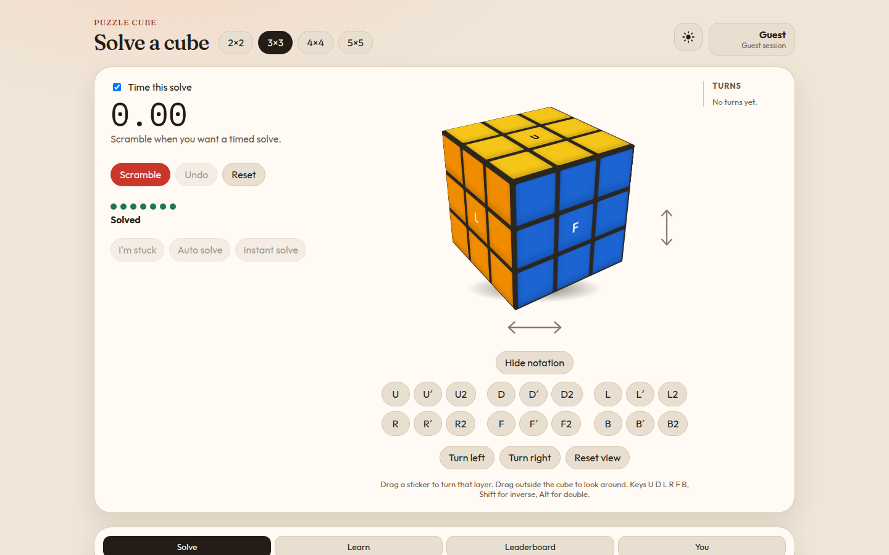

Next.js · React · TypeScript · Firebase
Puzzle Cube
Solve a 2×2, 3×3, 4×4, or 5×5 cube in the browser. Drag a sticker to turn that layer, use the keyboard for a turn, and open the lessons when a solve stalls. A timer and a leaderboard are there when you want them.
A guest session keeps solves on this device. Signing in saves them. GitHub is one of the sign-in methods.